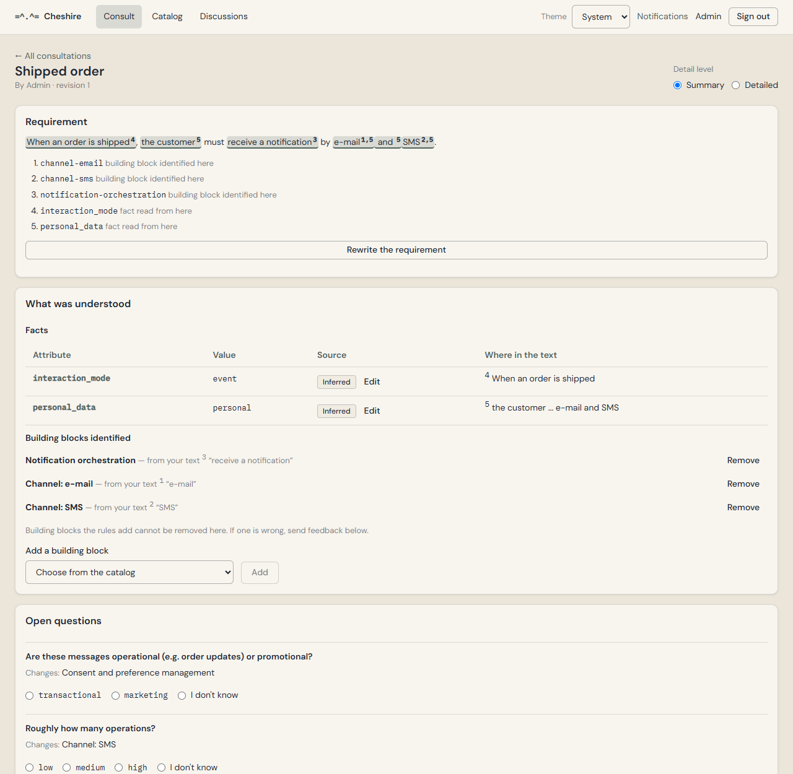

=^.^=
Cheshire
From a requirement to the building blocks it needs. The choice stays with you.
Deterministic rules
decide, not an LLM
The model
translates and explains
, grounded in a trace
No rankings.
Gaps are results too
v0.2.0
Open source · github.com/jnascimentogcc/cheshire
